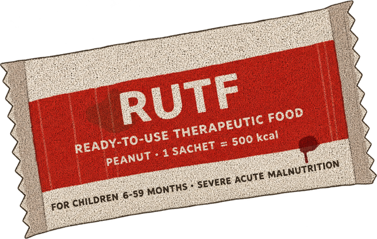
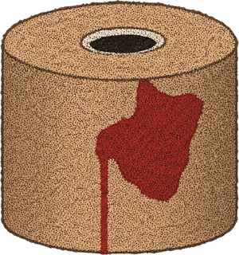
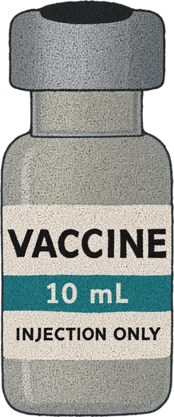
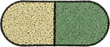
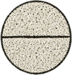
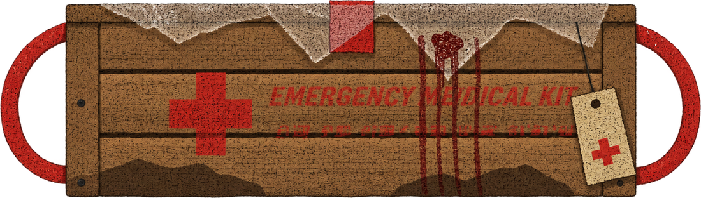
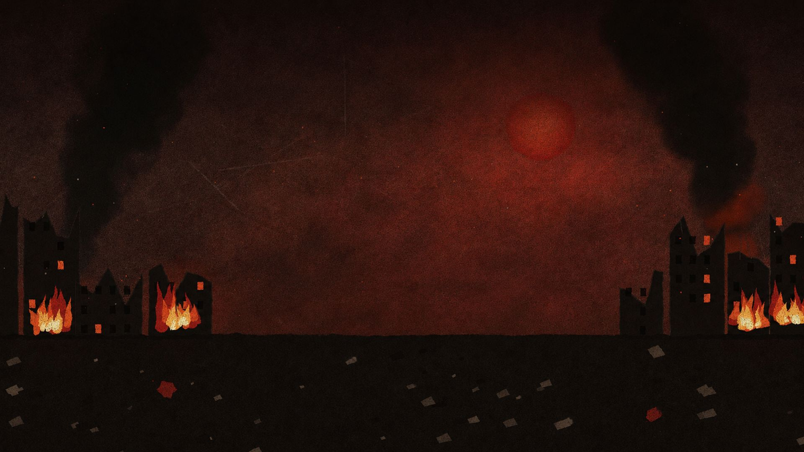
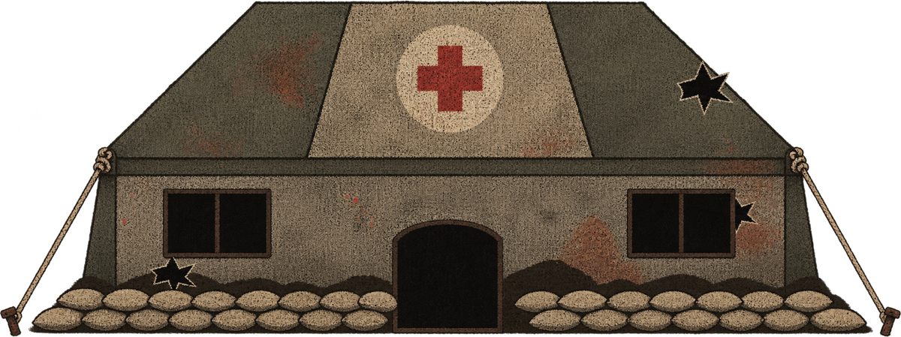
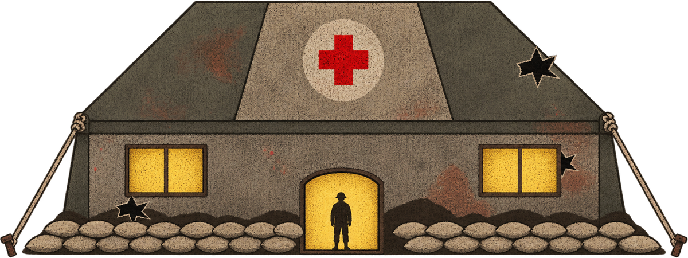

당신의 후원금은
현장에서 어떻게 쓰일까요?
후원금의 86%는 중간 누수 없이
현장으로 직행합니다
10,000원 중 8,600원이
현장 의료 활동에 사용됩니다
86%
8,600원
현장 의료 물자
10%
모금
4%
운영비
그렇다면 현장으로 전달된 8,600원은
실제로 어떤 물품이 되어 환자들에게 닿을까요?
이 8,600원은 현장에서 무엇이 될까요?
그렇다면 이 물품들이 모인 전장의 병원은 안전할까요?










보호 구역

국제법이 약속한 최후의 안전지대
국제법이 약속한 최후의 안전지대
병원은 어떤 상황에서도 공격 대상이 아니다
제네바 제4협약 제18조
민간 병원은 어떠한 상황에서도
공격의 대상이 될 수 없다
이 약속은 현실에서도 지켜지고 있을까요?